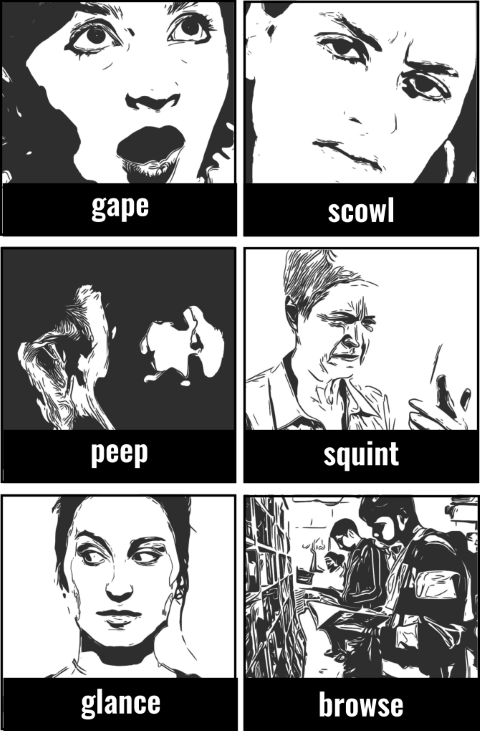
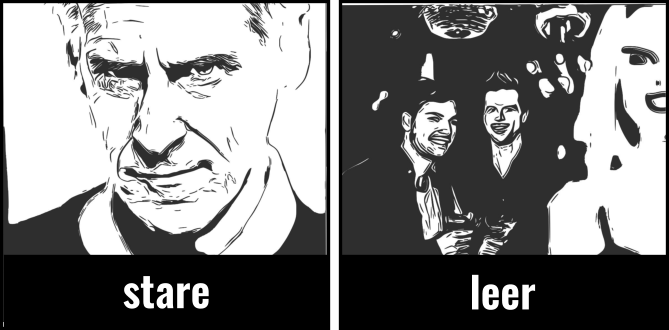

LONG TIME stare at: directly at sth for a long time without moving your eyes. gape at: with your mouth open because of shock, surprise. gaze at: look at sth interesting or beautiful for a long time. eye: to look at closely or with desire. gawp at: to stare at sb or sth in a rude or stupid way. gloat (over): in secret, with malignant satisfaction.
QUICKLY glance: quickly, once. “At first glance. Exchange glances.” peek at: quickly esp. sth you are not supposed to see. peep at / in: quickly esp. through a small opening. “Take / Have a peek.” glimpse: see sth by chance for a very short time. “Catch / Get a glimpse.”
ANGRILY glare at: angrily at sb for a long time. scowl at: to frown angrily.
WITH DIFFICULTY peer at: very carefully or hard esp. as if unable to see clearly. “Peer through / into / out.” squint at: with your eyes partly closed to see better.

SEARCHING browse (through): too look through or read parts of a book or magazine, etc, without any clear purpose esp. for enjoyment. look around: to look at what there is in a place such as a building, shop, town, etc.
WITH INTEREST leer at: to look with an unpleasant smile or sideways look expressing cruel enjoyment or sexual desire. ogle: with great interest esp. sexual. look at: turn your eyes towards sth so that you can see it.